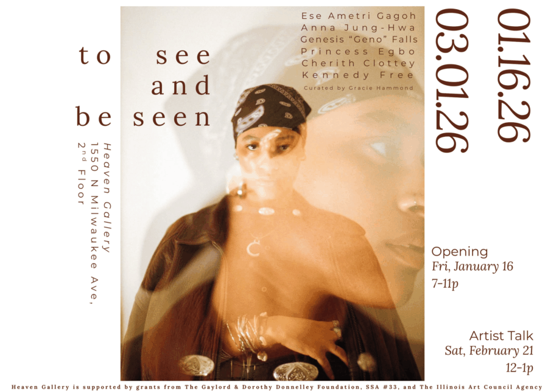

to see and be seen
Heaven Gallery is pleased to present To See and Be Seen. To See and Be Seen gathers a selection of works by Chicago artists working across painting, photography, and multimedia practices. Through varied mediums, these works interpret the portrait as intimacy, reflection, and revelation, casting light on both the subject and the artist, inviting the viewer into the intimacy of the space in between. The work featured is by artists including Ese Ametri Gagoh, Anna Jung-Hwa, Genesis “Geno” Falls, Princess Egbo, Cherith Clottey, and Kennedy Free.
Some pieces trace identity through layered textures, others capture fleeting expressions, or even sculpt unique stories and build worlds of their own. Each artist uses their craft to consider what it means to see and be seen. To see and be seen invites viewers into the intimate space between subject and artist, revealing the stories, relationships, and energies that bring each portrait to life. to see and be seen is curated by Gracie Hammond